Developing an Accessible ‘Add To Cart’ Flow
By Nic Chan
A small introduction
Freelance front-end developer
Worked on Shopify stores
Definitely a cat person
Talk format
4 Patterns:
Buttons
Inline Notifications
Toasts
Dialogs
Different iterations, advantages and pitfalls
Tips and tricks
A typical product page
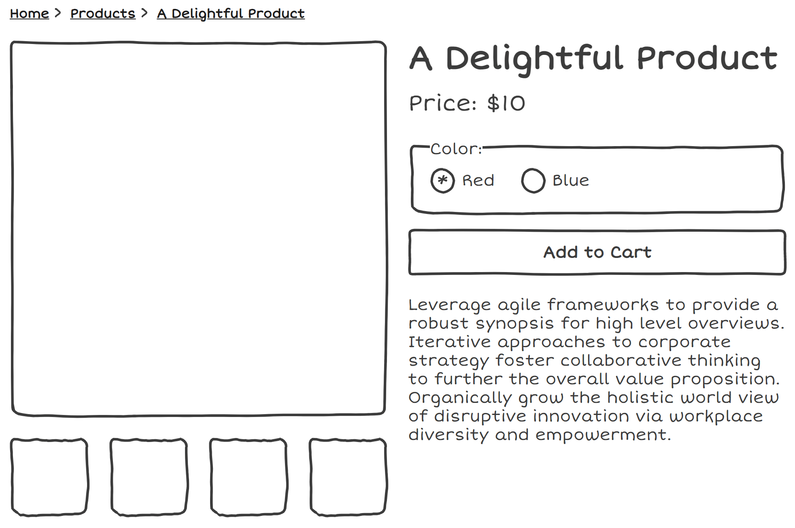
So right here we have a fairly standard product page, most folks will have seen some variation of this.
Lots of things to comment on in regards to accessibility, but for now we will be focusing on what happens after you hit that "Add To Cart" button
HTML forms, all the way down
Progressive Enhancement
Semantics
Common misconception that screen readers cannot use JavaScript
Why we would use the proper element is for two reasons:
Progressive enhancement
Semantics. Assistive technologies offer the functionality to jump to things like form elements
What happens with this default example? Redirected to a cart.
This solves a whole bunch of issues for us, navigating to a new page is a fundemental interaction of the web
So if this approach is so robust, why would people use alternative?
Merchants realized that this was pushing users to checkout too soon and forcing them into a single flow,
so these patterns were used to notify users and offer them the choice of whether to continue shopping or proceed to checkout
Now we're all on the same page, let's move into the patterns.
The 'button' pattern
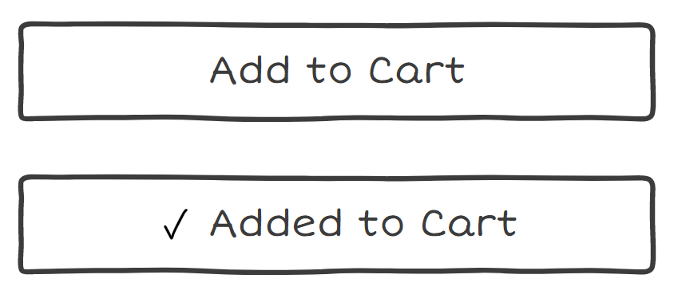
When a button's text is changed when it is activated.
A pattern that can be used in combination with other patterns, and I'd recommend it
Good for zoom users!
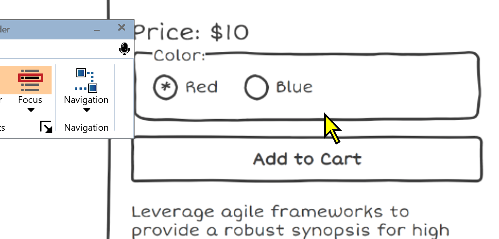
Good for users who use magnification, whether it be the default browser zoom, or special zooming software.
Can only see a very small region of the screen, so it's good to have some indication of the state in the place they're currently looking at
ZoomText centered on a button
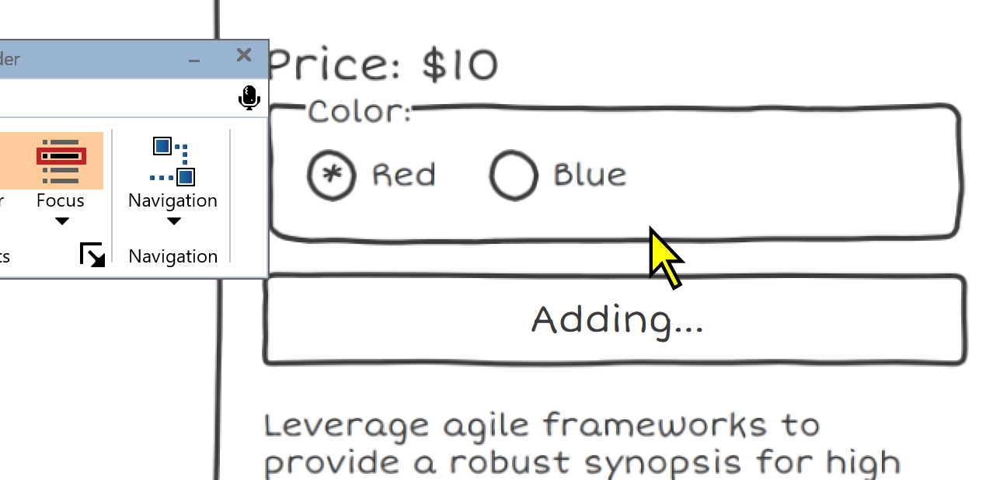
We can't rely on just changing the text of our button
addToCart(item).then(() => {
const addToCart = document.getElementById('add-to-cart');
liveRegion.innerText = 'Adding...'
})
Moving onto implementation details, these buttons are typically implemented by using JS to change the text.
Screen readers handle changes the text of things inconsistently
Live regions with buttons
Adding...
addToCart(item).then(() => {
const liveRegion = document.getElementById('live-region');
const addToCart = document.getElementById('add-to-cart');
liveRegion.innerText = 'Adding...'
addToCart.innerText = 'Adding...'
})
If this is your only indication of state, you'll definitely want to be using live regions.
Live regions are a way to announce changes in your site to assistive technology users. Text-only announcements.
Live regions can be created by adding the aria-live attribute, with a value of either polite or assertive.
Live regions work most consistently when already present in the DOM. You don't want to be adding them dynamically. Update the text, and clear it out when appropriate.
disabled or aria-disabled?
Adding...
Adding...
Sometimes, developers add the disabled attribute when the action is being processed to prevent double submission
This is definitely a case where the phrase 'it depends!' is very relevant
disabled may cause the focus to be lost
aria-disabled may not be any better, as what can be announced to screen readers will usually be something like 'Add To Cart, Unavailable',which can be confusing in an e-commerce context
Consider your userbase, if your website is selling to a technical audience, your audience may have a higher level of tech proficiency and won't be phased by the 'Unavailable' announcement
Consider testing with users whether or not a disabled attribute is needed, or if you should just disable click with JS
Consider your wording
Just using this pattern in isolation can cause issues
On the left, we have Add To Cart -> Adding... -> Add To Cart: Can be confusing if they are the only indication of state, as it requires the user to be actively paying attention to what may be a small difference
On the right, we have Add to Cart -> Adding -> Added to Cart: Poses different problem of if you want to reset the button to the original state, there is room for confusion about what this button does now
The wording issues can be mitigated by using this pattern in combination with other a future pattern, such as the next pattern.
Inline Notifications
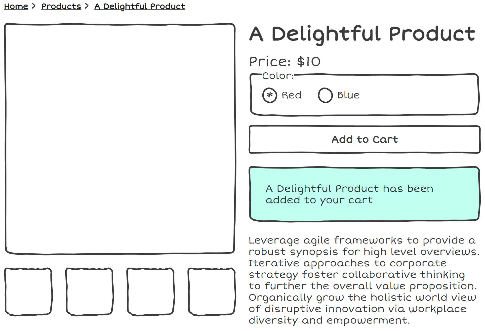
So, what do I mean when I refer to the Inline pattern?
not sticky/position absolute, the message is inserted into the reading area. content is often shifted in order to create space for this notification. [explain image]
Should we use live regions for inline notifications?
A Delightful Product has been added to your cart
addToCart(item).then(() => {
const notification =
document.getElementById('notification');
notification.innerText =
`${item.title} has been added to your cart`
notification.focus();
})
We've already discussed the idea of live regions as a way of presenting content to AT, so should we also be using them here?
Live regions can be thought of as temporary notifications. They're the web equivalent of an announcement blaring at you over the loudspeaker. If they're not in a logical place, like how I've placed it right under the Add to cart button, it may not be obvious where in the DOM they are, and screen reader users have no option to go back and listen to that text again.
Zoom magnification users who don't use accompanying audio could be left out and miss this notification entirely.
We can consider programmatically moving the focus to the notification once it is enters the DOM, and this will be announced to screen reader users and other groups
Interactive Child Elements
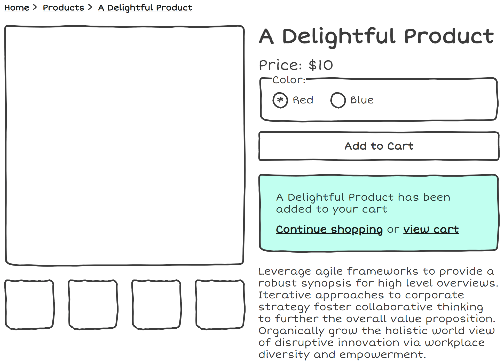
Sometimes our notification isn't just text, but also includes interactive elements. [explain].
In these situations, we have to move the focus to the element, because aria-live regions strip semantics of child elements
Screen reader users might be able to tell these are actions from the words
Some implementations will have this notification disappear after a short period of time. While this is already not adviseable due to being easily missable,
2.2.1 Timing adjustable criterion. Essentially, these criterion exist to make sure we are allowing people adequate time to complete interactions. Because we are providing different interactions within the notification, hiding the notifications automatically can prevent users from completing those interactions
A way around this would be to add a button to dismiss the notification manually instead.
Placement Options
In the wild, I often see different placement options for this pattern. [explain images]
I'd argue that the best placement for the notification is after the add to cart button
If we're moving focus, technically we meet requirements either way, but we can really improve usability by not taking users too far out of the context they were originally in
Placing it near the button helps to minimize tab stops for keyboard users, and not disorient with dramatic content shifts
A word of warning about toasts
Toasts and dialogs are fundamentally different
The next two patterns I will be discussing are toasts and dialogs
Before I get into the details, i'd like to emphasize that these patterns can often lack distinctions in the wild.
I will describe behaviors of both dialogs and toasts in terms of how they should behave, but the lines are blurred.
because they both pop up on the screen and overlay content, people tend to see a toast as just a smaller dialog, code them in a very similar way.
this ignore distinctions in semantics and requirements for each of these to be accessible.
A lot of accessibility errors come about from developers treating these two components as interchangeable.
An introduction to toasts
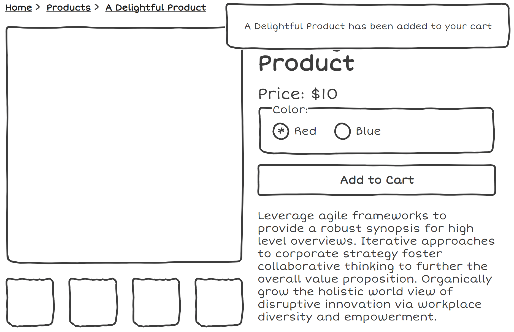
toast is named after the behavior of a toaster.
Element that pops up in a fixed position on the screen, typically in the top right, bottom right, under the nav, etc.
role="status" or aria-livefocus typically isn't moved to them
Contrary to how toasters work in real life, toasts on the web often disappear after a few seconds.
Should we be using toasts?
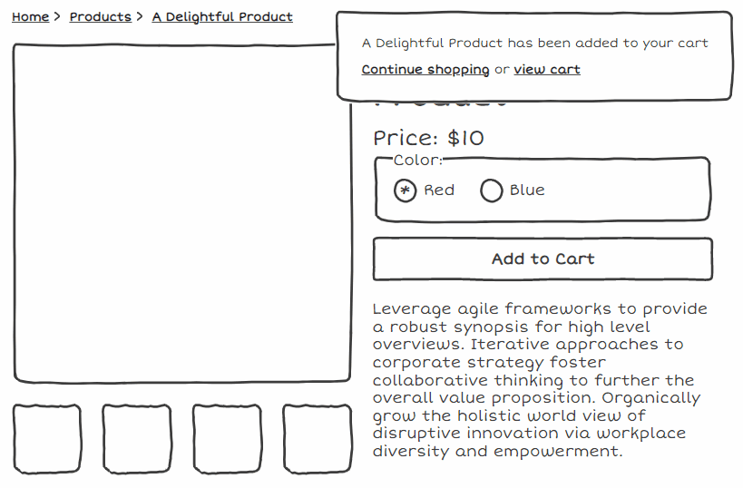
A lot of the problems with toasts stem from the fact that by definition, focus isn't moved to it.
Furthermore, toasts inherently have a problem shared with a lot of fixed position elements - Missable by zoom users.
Early on, we discussed 2.2.1 timing adjustable criterion and the problem with child elements, and this applies here. Trying to interact with a notification that disappears is as frustrating as your toast vanishing off your plate while you try to eat it.
Toast solutions
how do we make sure we don't fail the 2.2.1 criterion while keeping the toast behavior? custom timings, toast drawer, which looks like notifications on phone, but this kind of defeats the original point. No one wants a drawer full of stale toasts.
Unfortunately, I think that toasts don't really live up to their namesake and are not as useful or delicious as their real-world counterparts. especially in an e-commerce setting where the add to cart is the primary action. What developers often try to as implement as toasts should really be dialogs instead, which leads us to our next section
Dialogs!
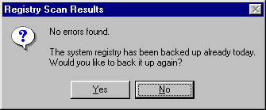
An often misunderstood component. Misconception that all dialogs are basically what we understand to be an alert.
All of the following patterns are examples of things I regularly see on online stores. While visually they look different, they all can be considered dialogs, and can use similar semantics and functionality under the visual styling.
This is also a dialog
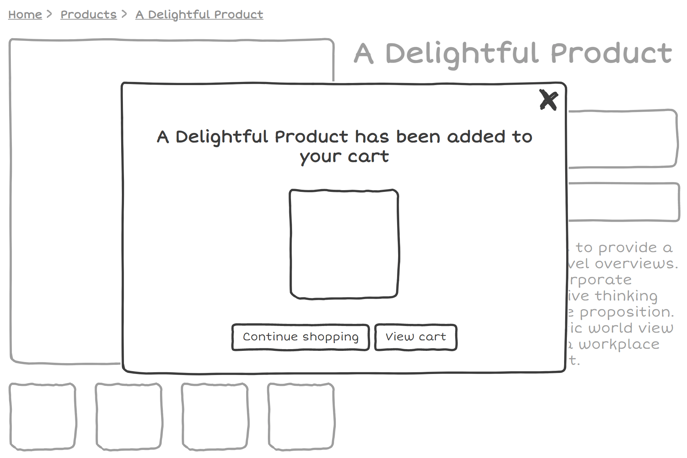
Even this a dialog
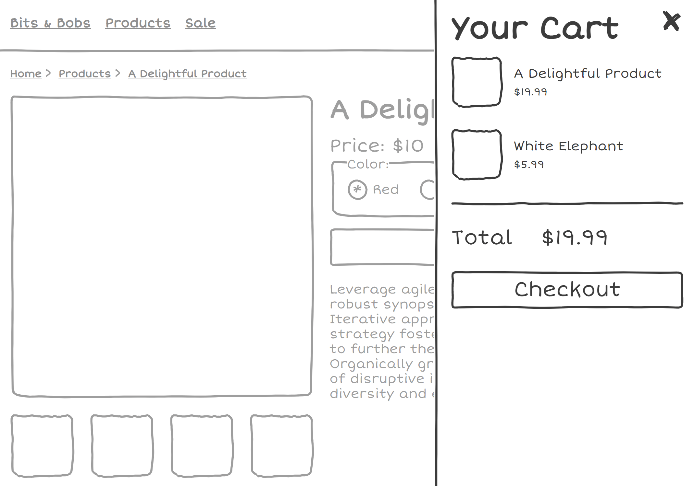
The primary difference between these different dialogs is modal and non-modal
Non modal dialogs don't prevent interactations between the rest of the page when open.
So if you have a backdrop behind your dialog, that probably would suggest that it is a modal and it should be built in a modal way.
Now we know that all these seemingly different patterns are actually just dialogs under the hood, I'm going to give you some advice on implementation details
If web dev were a video game, dialogs would be the final boss. I'm not going to go into all the intricacies of building an accessible dialog because it is super complex, but here are a few
Focus Management
Move focus to the dialog
If modal, trap focus, but also allow focus to move to browser UI elements
Return focus to the element that opened the dialog
The frequently cited phrase 'It depends' is very relevent here! Whether your dialog is modal or non-modal, you will want to move focus to it
If your dialog is modal, you will want to trap focus, which means that you shouldn't be able to focus the document in the background. Hitting tab a bunch of times should cycle between the elements in the modal, and then shift to the browser UI
Focus should return to the element that triggered the dialog, so in this case, it's our friend the Add to Cart button, but if you've opted for a minicart that can be opened through a cart button in the header, you'll need to account for handling different modal triggers.
Keyboard
Don't forget keyboard shortcuts! Hitting the escape key should close the dialog.
Screen reader users shouldn't be able to escape the modal through other keyboard means. In this future, aria-modal="true" should have more support, but inert works for now
Don't dismiss dialogs automatically
Keyboard shortcuts. Escape key should close it.
If modal, Making sure AT users can't escape from the modal via other means. aria-modal="true" is a great way to do this, presently not too well supported. `Inert`+ polyfill. We often talk about focus trapping, but what can end up is happening that the focus is trapped in the modal, but screen reader users can exit the modal with the arrow keys or other forms of navigation
Don't dismiss dialogs automatically
Which element to use?
<dialog> is not quite there yet, but almost!<div> with role="dialog"
Label ALL the things!
Label your dialog - consider aria-labelledby
If your dialog has repetitive interactive elements (eg. multiple 'Increase Quantity') buttons, make sure they have unique names
Label your dialog (Your Shopping Cart,)
If your dialog is a modal cart, be sure to make sure that elements that tend to be repetitive don't all have the same name.
Takeaways
No clear winner amongst patterns
Testing individual components is important, but testing whole flows is essential
toasts and dialogs are NOT the same. Accessibility errors come about from treating different components interchangably.